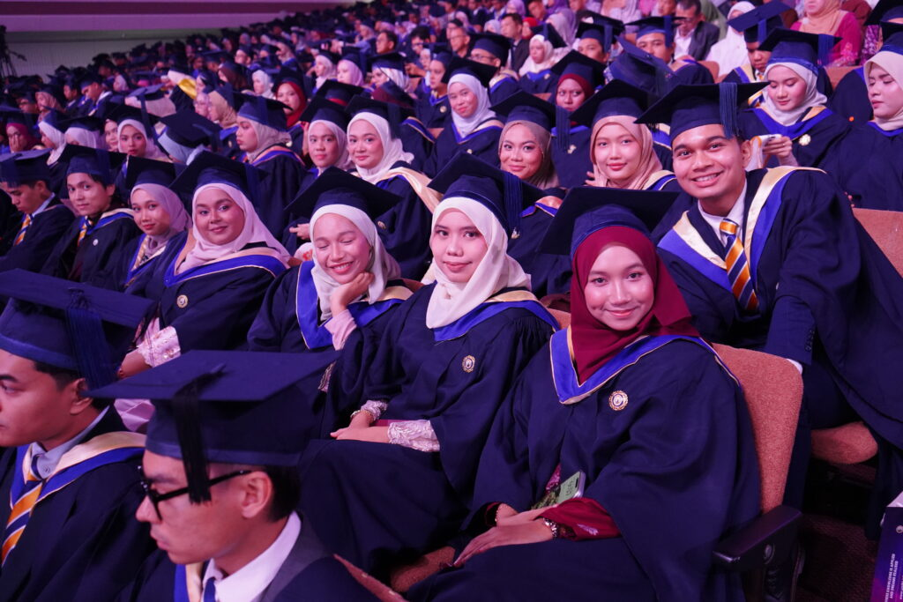
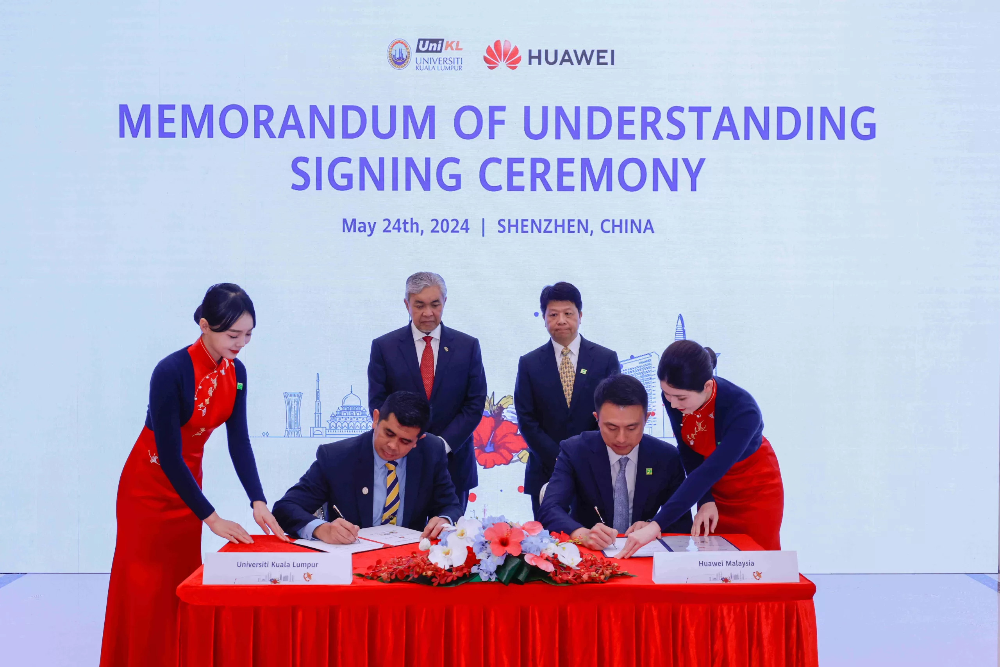
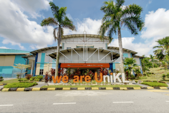
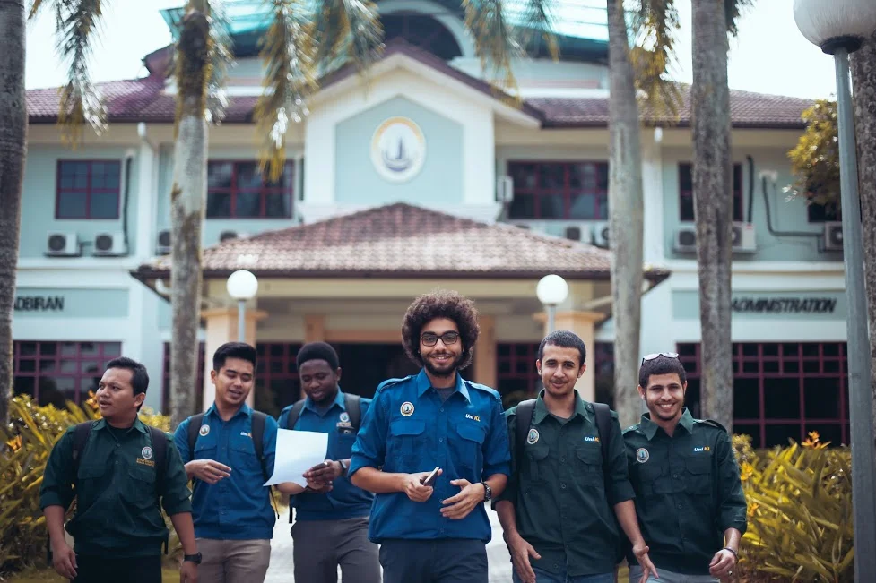
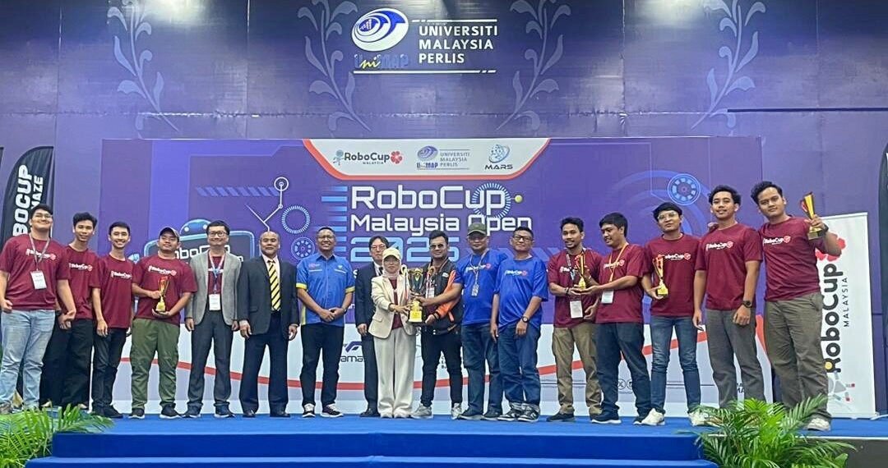

About Universiti Kuala Lumpur (UniKL)
Universiti Kuala Lumpur (UniKL) is Malaysia's leading technical university, established in 2002 and wholly owned by Majlis Amanah Rakyat (MARA), an agency under the Ministry of Rural and Regional Development. UniKL operates under a unique "One Institute, One Specialisation" framework, housing specialised institutes across Malaysia that combine high-level academic study with practical technical training.
With over 29,000 students across its specialized campuses, UniKL collaborates closely with major global industrial leaders—such as Airbus, Thales, BMW, and Microsoft—to ensure curricula remain at the forefront of industry needs. Graduates benefit from hands-on laboratory experiences, industry certifications, and top graduate employability rates nationwide.
Campus Life







